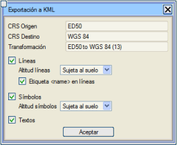
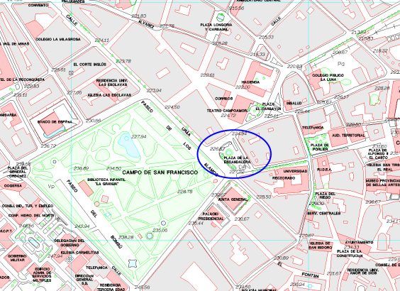
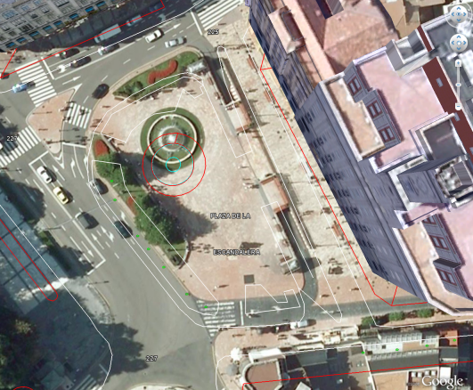
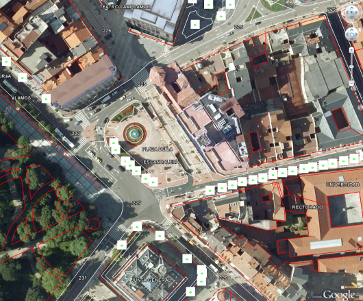

| |
|
DOSYA DIŞA AKTARMA
|
|
.dwg/.dxf Dosyalarını Dışa Aktarma .dgn Dosyalarını Dışa Aktarma .kml Dosyalarına Dışa Aktarma (Google Earth®) Raster Görüntüye Dışa Aktarma XYZ Dosyasına (.xyz) Dışa Aktarma .dwg/.dxf Dosyalarını Dışa Aktarma .dwg/.dxf dosyalarının dışa aktarımı burada açıklanmaktadır. .dgn Dosyalarını Dışa Aktarma .dgn dosyalarının dışa aktarımı burada açıklanmaktadır. .kml Dosyalarına Dışa Aktarma (Google Earth®)  .kml formatındaki dosyalara dışa aktarma, Dosya → Dışa Aktar → KML (Google Earth) seçeneği aracılığıyla yapılır. Ardından sağda gösterilen gibi bir iletişim kutusu açılacaktır. Burada, o an seçili olan CRS ve hedef CRS (Google Earth® WGS 84 CRS'sini kullanır) belirtilir. Ayrıca, varsa, uygun dönüşüm (OGP'ye göre standartlaştırılmış) de belirtilir. Ayrıca, kullanıcı, çizgilerin yanı sıra sembolleri ve etiketleri de dışa aktarmak isteyip istemediğini belirtmelidir (varsayılan olarak etkindir). Yazılan elemanları mutlak yükseklikle kml'ye yazma seçeneğimiz de mevcuttur. .kml dosyasına yazılan metinler, " / " , " & " karakterlerini " _ " ile değiştirmek için filtrelenir, çünkü Google Earth bu karakterleri desteklemez. Onaylandıktan sonra, program .kml dosyası için bir ad ister ve onu çalışılan klasöre kaydeder. Geriye sadece, bu dosyayı Google Earth®'te açmak ve sonucu kontrol etmek kalır. Bazen, elde edilen .kml dosyası hava fotoğrafıyla eşleşmez ve bazen onlarca metre olabilen sapmalar meydana gelir. Bunun iki nedeni olabilir:

Programın varsayılan olarak önerdiği dönüşümü (ED50 to WGS 84 (13)n) kullanarak doğrudan .kml dosyasını elde etmenin ve bunu Google Earth®'e yüklemenin sonucu şudur: 
Fotoğraftaki havuzun konumu ile .edm dosyasına karşılık gelen konum arasında yaklaşık 7 metrelik bir hata açıkça görülebilir. Bu sapmayı azaltmak için, CRS'lere karşılık gelen iletişim kutusunu açmak ve alt kısımda [Yeni] bir dönüşüm yapılacağını belirtmek yeterlidir. Ardından .edm'e göre havuzun merkezinin X ve Y koordinatları (sol taraf) ve Google Earth®'ten alınan eşdeğer koordinatlar (sağ taraf) girilecektir. Google Earth®'ün düşük hassasiyeti göz önüne alındığında, bunları desimetreye veya santimetreye yaklaştırmak yeterli olacaktır. Kullanıcıya, güney yarımkürede çalışılıyorsa, dilimi negatif işaretle belirtmesi gerektiği hatırlatılır. Program daha sonra jeosentrik (kartezyen değil) sapmayı hesaplar ve dönüşümde kullanılacak üç parametre olan dX, dY ve dZ değerlerini türetir. Dolayısıyla bu dönüşüm, 7 parametreli bir 3D Helmert yerine sadece bir jeosentrik ötelemeden oluşacaktır, ancak referans noktasından onlarca kilometre uzaktaki noktalar için bile yeterli hassasiyet sağlayacaktır.  [Dönüştür] düğmesine basmaya gerek yoktur, programın bu özel dönüşümü dikkate alması için doğrudan Dosya → Dışa Aktar → KML (Google Earth)'e gitmek yeterlidir. Bu şekilde .edm'in koordinatlarını değiştirmekten kaçınılır. Bu yöntemle elde edilen sonuç aşağıdaki ekran görüntüsünde gösterilmektedir: 
Raster Görüntüye Dışa Aktarma Bu araçla, ekrandaki EDM formatı bir raster görüntüye (formatlar .tif, .jpg, .png veya .bmp) dışa aktarılabilir. Görüntü, coğrafi referans bilgileriyle tamamlanacaktır. XYZ Dosyasına (.xyz) Dışa Aktarma .xyz dosyalarının dışa aktarımı burada açıklanmaktadır. |